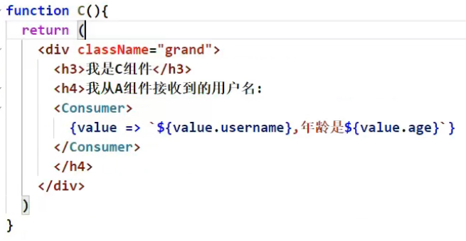

xxxxxxxxxx181(1). setState(stateChange, [callback])------对象式的setState21.stateChange为状态改变对象(该对象可以体现出状态的更改)32.callback是可选的回调函数, 它在状态更新完毕、界面也更新后(render调用后)才被调用4(2). setState(updater, [callback])------函数式的setState61.updater为返回stateChange对象的函数。72.updater可以接收到state和props。84.callback是可选的回调函数, 它在状态更新、界面也更新后(render调用后)才被调用。9总结:101.对象式的setState是函数式的setState的简写方式(语法糖)112.使用原则：12(1).如果新状态不依赖于原状态 ===> 使用对象方式13(2).如果新状态依赖于原状态 ===> 使用函数方式14(3).如果需要在setState()执行后获取最新的状态数据,15要在第二个callback函数中读取16this.setState((state, props) => {17console.log(state, props);18})
xxxxxxxxxx121// lazy和Suspense都是从React中引入，不是react-route-dom 2//1.通过React的lazy函数配合import()函数动态加载路由组件 ===> 路由组件代码会被分开打包3 const Login = lazy(()=>import('@/pages/Login'))4 5 //2.通过<Suspense>指定在加载得到路由打包文件前显示一个自定义loading界面6 // fallback这里面也可以是一个组件，但是该组件不能懒加载7 <Suspense fallback={<h1>loading..</h1>}>8 <Switch>9 <Route path="/xxx" component={Xxxx}/>10 <Redirect to="/login"/>11 </Switch>12 </Suspense>
xxxxxxxxxx21(1). Hook是React 16.8.0版本增加的新特性/新语法2(2). 可以让你在函数组件中使用 state 以及其他的 React 特性
xxxxxxxxxx31(1). State Hook: React.useState()2(2). Effect Hook: React.useEffect()3(3). Ref Hook: React.useRef()
xxxxxxxxxx81(1). State Hook让函数组件也可以有state状态, 并进行状态数据的读写操作2(2). 语法: const [xxx, setXxx] = React.useState(initValue)3(3). useState()说明:4参数: 第一次初始化指定的值在内部作缓存5返回值: 包含2个元素的数组, 第1个为内部当前状态值, 第2个为更新状态值的函数6(4). setXxx()2种写法:7setXxx(newValue): 参数为非函数值, 直接指定新的状态值, 内部用其覆盖原来的状态值8setXxx(value => newValue): 参数为函数, 接收原本的状态值, 返回新的状态值, 内部用其覆盖原来的状态值
xxxxxxxxxx201function Demo(){2 // 只能分开写，如果状态中有多个值的话3 const [count,setcount] = React.useState(0)4 const [name,setName] = React.usestate('tom')5 function add(){6 //setcount(count+1) 第一种写法7 setCount(count => count+1)8 }9 function changeName(){10 setName('jack')11 }12 return (13 <div>14 <h2>当前求和为: {count}</h2>15 <h2>我的名字是: {name}</h2>16 <button onclick={add}>点我+1</button>17 <button onclick={changeName}>点我改名</button></div>18 )19}20
xxxxxxxxxx181(1). Effect Hook 可以让你在函数组件中执行副作用操作(用于模拟类组件中的生命周期钩子)2(2). React中的副作用操作:3发ajax请求数据获取4设置订阅 / 启动定时器5手动更改真实DOM6(3). 语法和说明:7useEffect(() => {8// 在此可以执行任何带副作用操作9return () => { // 在组件卸载前执行10// 在此做一些收尾工作, 比如清除定时器/取消订阅等11}12}, [stateValue]) // 如果指定的是[], 回调函数只会在第一次render()后执行13[]数组中为需要监测的值，这个值改变就会调用函数14如果不传第二个参数，就是默认监测所有state15(4). 可以把 useEffect Hook 看做如下三个函数的组合16componentDidMount() 后面传一个空数组17componentDidUpdate() 后面传一个带变量得数组18componentWillUnmount() 第一个参数返回一个函数，这个函数就是卸载节点回调函数
xxxxxxxxxx91React.useEffect(()=>{2 let timer = setInterval(()=>{3 setCount(count => count+1 )4 },1000)5 return ()=>{6 clearInterval(timer)7 }8},[])9
xxxxxxxxxx31(1). Ref Hook可以在函数组件中存储/查找组件内的标签或任意其它数据2(2). 语法: const refContainer = useRef()3(3). 作用:保存标签对象,功能与React.createRef()一样
xxxxxxxxxx61// 定义2myref = React.useRef();3// 使用 .current拿到节点4myref.current.value5// 标记节点6<input ref={myref}/>
xxxxxxxxxx61import React, Component, Fragment from 'react'2// 如果有遍历，就可以使用Fragment，他有一个key属性4<Fragment><Fragment>5// 也可以直接用一个空标签6<></>
可以不用必须有一个真实的DOM根标签了
可以在创建一个组件时，将最外层的div换掉，就可以少几层标签嵌套
一种组件间通信方式, 常用于【祖组件】与【后代组件】间通信
xxxxxxxxxx1611) 创建Context容器对象： 2const XxxContext = React.createContext() 32) 父组件渲染子组时，外面包裹xxxContext.Provider, 通过value属性给后代组件传递数据： <xxxContext.Provider value={数据}> 4 子组件 5</xxxContext.Provider> 63) 后代组件读取数据： 7//第一种方式:仅适用于类组件 8static contextType = xxxContext // 声明接收context 9this.context // 读取context中的value数据 10//第二种方式: 函数组件与类组件都可以 11<xxxContext.Consumer> 12 { 13 // value就是context中的value数据14 value => ( // 要显示的内容 ) 15 } 16</xxxContext.Consumer>
xxxxxxxxxx11在应用开发中一般不用context, 一般都用它的封装react插件
- 只要执行setState(),即使不改变状态数据, 组件也会重新render() ==> 效率低
- 只当前组件重新render(), 就会自动重新render子组件，纵使子组件没有用到父组件的任何数据 ==> 效率低
只有当组件的state或props数据发生改变时才重新render()
Component中的shouldComponentUpdate()总是返回true
xxxxxxxxxx101办法1:2重写shouldComponentUpdate()方法3比较新旧state或props数据, 如果有变化才返回true, 如果没有返回false4办法2:5使用PureComponent6PureComponent重写了shouldComponentUpdate(),7只有state或props数据有变化才返回true8注意:9只是进行state和props数据的浅比较, 如果只是数据对象内部数据变了, 返回false10不要直接修改state数据, 而是要产生新数据项目中一般使用PureComponent来优化
xxxxxxxxxx41Vue中: 使用slot技术, 也就是通过组件标签体传入结构 <A><B/></A>2React中:3使用children props: 通过组件标签体传入结构4使用render props: 通过组件标签属性传入结构,而且可以携带数据，一般用render函数属性
xxxxxxxxxx51<A>2<B>xxxx</B>3</A>4{this.props.children}5问题: 如果B组件需要A组件内的数据, ==> 做不到
xxxxxxxxxx31<A render={(data) => <C data={data}></C>}></A>2A组件: {this.props.render(内部state数据)}，通过调用函数来加载子组件3C组件: 读取A组件传入的数据显示 {this.props.data}
错误边界(Error boundary)：用来捕获后代组件错误，渲染出备用页面
只能捕获后代组件生命周期产生的错误，不能捕获自己组件产生的错误和其他组件在合成事件、定时器中产生的错误
getDerivedStateFromError配合componentDidCatch
xxxxxxxxxx191// 生命周期函数，一旦后代组件报错，就会触发2static getDerivedStateFromError(error) { 3 console.log(error); // 在render之前触发 4 // 返回新的state 5 return { 6 hasError: true, 7 };8}9componentDidCatch(error, info) { 10 // 统计页面的错误。发送请求发送到后台去 11 console.log(error, info);12}13
14// 父组件使用错误边界，渲染错误情况y：15<div>16 <h2>我是Parent组件</h2>17 {this.state.hasError ? <h2>当前网络不稳定，稍后再试</h2> : <child/>}18</div>19
xxxxxxxxxx911.props：2(1).children props3(2).render props42.消息订阅-发布：5pubs-sub、event等等63.集中式管理：7redux、dva等等84.conText:9生产者-消费者模式
xxxxxxxxxx31父子组件：props2兄弟组件：消息订阅-发布、集中式管理3祖孙组件(跨级组件)：消息订阅-发布、集中式管理、conText(开发用的少，封装插件用的多)